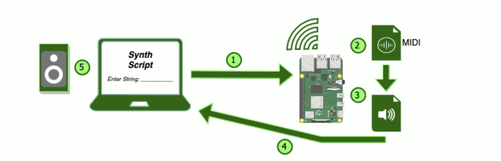

1. A script is typed by user and then sent to the local Raspberry Pi directory.
2. The string is changed into a MIDI file using the Mido library.
3. The MIDI file is turned into an audio file using FluidSynth.
4. The audio file is sent back to the computer.
5. The audio file is outputted to the computer's speakers.
Synth Scripts algorithm will use the patterns in the English language to develop these melodies. Vowels, string length, non vowels, and punctuation are the four main features our algorithm uses to produce melodies. Vowels are placed where chords will be played. String length determines the tempo of the melody. Non vowel characters are used for 1-3 note patterns. And if a string ends with '!' or '...' it will change the velocity of all notes (velocity refers to how hard each not is hit/played).
Synth Scripts algorithm will use the patterns in the English language to develop these melodies. Vowels, string length, word length, punctuation, and word size are the five main features our algorithm uses to produce melodies. Vowels are places where chords will be played String length will determine the time signature the notes will be played in as well as the temp of the melody. Punctuation and spaces are places for spaces and breaks in the pattern. Word Length is used to determine the pattern of the other singular notes not in the chord.